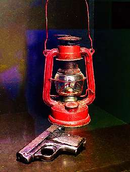

Борис Акунин
Мой календарь
В этот весенний день (вернее вечер, было уже темно) в 1943 году по Бельгии ехал поезд, весь состоявший из запертых вагонов для транспортировки скота. В них везли полторы тысячи взрослых и детей. В Освенцим, согласно плану «окончательного решения еврейского вопроса».
На путях зажегся красный огонек. Машинист затормозил, боясь аварии. Загремели выстрелы. Конвой приготовился к бою.
Совершенно полоумную акцию по нападению на охраняемый поезд в самом центре оккупированной Европы устроили три человека. Из оружия у них на всех имелся один пистолет, а больше ничего не было.
Пока двое пытались взломать двери, третий - его звали Юра Лившиц (так и пишут Youra, он родился в Киеве) - бегал вдоль полотна и палил из этого самого пистолета, чтобы охрана вообразила, будто нападавших много.
Прежде чем эсэсовцы опомнились, налетчики успели открыть два вагона и еще в несколько просунули инструменты.
Убежать в ночь сумели сто шестнадцать обреченных, и никого из них бельгийцы не выдали, так что акция оказалась не такой уж полоумной.
Потом, конечно, гестапо всех троих выловило. Двоих бельгийцев отправили в концлагерь, Юру как еврея расстреляли. Он был врач, двадцати шести лет.

Не важно, чего у тебя нет. Важно, что в тебе есть.